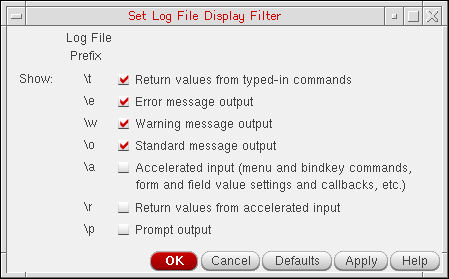

Copying the Example File
The following demo file is used in this example:
<your_install_dir>/tools/dfII/samples/skill/demo.il
To copy this demo file for the walkthrough, do the following:
-
Make a temporary directory in your current working directory:
mkdir tmp
-
Change directory to your new temporary directory:
cd tmp
-
Copy the demo file from the Cadence installation hierarchy:
cp <
your_install_dir>/tools/dfII/samples/skill/demo.il . -
In your CIW, choose Options – Log Filter.
The Set Log File Display Filter form appears.
 - Verify the settings as shown above.
Related Topics
SKILL IDE Debugger Example File
Loading and Running the Example File
Using Breakpoints to Find and Correct a Functional Error
Return to top